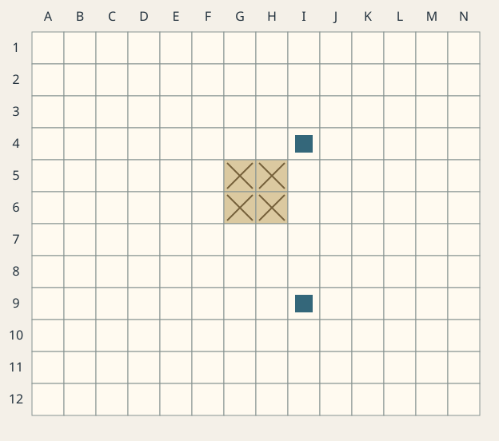

Одинаковые правила, разная история
Все карты совпадают с сеткой нативного пакета: 14 × 12, клетка — 5 футов. G5/H5/G6/H6 — трудная местность; I4/I9 — половинное укрытие. Остальные детали описания декоративны, пока ведущий не изменил поле штатно.
Расстановка и параметры
Герои по порядку: B3, B4, B5, B6, C3, C4, C5. Противники: L3, L4, L5, L6, M3. Используйте только нужное число фигур.
Для 3 / 4 / 5 / 6 / 7 игроков: 2 / 3 / 3 / 4 / 5 противников, здоровье каждого 12 / 14 / 16 / 18 / 20. Защита 12; скорость 20 футов; одна ближняя атака +3, 1d4+1 дробящего урона, досягаемость 5 футов.
Враги — простая поддерживаемая модель. Мирные решения и ограничения сцены описаны отдельно; ведущий подтверждает их результат. После первого раунда напомните пути переговоров или отступления. Встречи не запускаются автоматически.
Проба общего круга
Только по явному согласию всех игроков на дополнительный учебный спарринг вечером 2 или 5. Сам вход во двор встречу не запускает.
Цель и выходы
Попробовать согласованные обычные игровые действия против учебной команды и после остановки назвать, как вы поддерживали общий план. Зачётных очков нет. Можно выиграть спарринг, остановиться, сдаться или покинуть площадку; при любом исходе сведения о стиле доступны.
Вместо спарринга Сэн предлагает пройти рисунок фигурками по доске и каждому назвать точку возвращения. Можно наблюдать открытый показ, письменно обсудить его или прекратить упражнение; это даёт те же сведения без потери очков.
Поведение противников
Спортсмен в зелёной учебной ленте с условным мягким инвентарём. Хиты описывают усталость, без кровавых травм. КД 12; одна обычная ближняя атака +3, урон 1d4+1.
Ученики придерживаются заранее названного общего замысла и используют только стандартные игровые действия и перемещения. Не получают скрытых действий, специальных захватов или бонусов за школьную принадлежность. Судья принимает объявление сдачи немедленно; при нуле хитов участник завершает учебный эпизод без описания тяжёлой травмы.
Размер группы
Для 3/4/5/6/7 игроков соответственно 2/3/3/4/5 соперников с 12/14/16/18/20 хитами каждый. Во всех вариантах КД 12, одна атака +3 на 1d4+1. Ведущий подбирает вариант по присутствующим и не увеличивает число после старта. Остальные ученики остаются зрителями без ходов.

↔ На узком экране прокрутите карту вбок. Полный размер доступен по ссылке ниже.

Поле 14×12, колонки A–N, ряды 1–12. Единственная трудная местность: G5, H5, G6, H6 — мягкие учебные маты. Половинное укрытие только I4 и I9 — низкие перегородки. Ленты, меловые круги, подушки и рисунки вне этих клеток являются декорациями и не добавляют правил, препятствий или укрытия. Все соперники начинают в указанной локации; выход из учебной площадки завершает участие по договорённости с судьёй.
Проба перемены рисунка
Вечер 3, только если все игроки захотели отдельный безопасный спарринг до зачётного выступления. Не считать его частью официального счёта.
Цель и выходы
Проверить, как команда замечает изменение общего рисунка, используя обычные ходы и объявленные действия. Нет обязательного числа раундов или автоматического таймера. Отступление, сдача и остановка доступны; проигрыш не мешает основной встрече.
Даро показывает смену цветных лент, а герои фигурками или словами предлагают ответ в рамках обычной программы. Наблюдение и разбор дают сведения о паузах независимо от согласия на спарринг. Можно закончить упражнение и перейти к чаю.
Поведение противников
Спортсмен с оранжевой учебной лентой и условной мягкой кистью. КД 12; одна обычная ближняя атака +3 на 1d4+1. Повествование остаётся образным, без реальных инструкций боя.
Ученики могут менять направление обычным перемещением и пользоваться стандартным Отходом; специальных скачков и внезапных дополнительных атак нет. Изменение их плана показывается открытым описанием. Они стараются выиграть упражнение, но сразу соблюдают остановку и границы стола.
Размер группы
Для 3 игроков 2 соперника по 12 хитов; для 4 — 3 по 14; для 5 — 3 по 16; для 6 — 4 по 18; для 7 — 5 по 20. КД всегда 12, одна атака +3, урон 1d4+1. Нет дополнительного давления временем на большие группы; заявки собираются по кругу.
↔ На узком экране прокрутите карту вбок. Полный размер доступен по ссылке ниже.

Поле 14×12: A–N и 1–12. Только G5, H5, G6, H6 являются трудной местностью, обозначенной мягкими матами. Только I4 и I9 дают половинное укрытие как низкие перегородки. Тканевые дорожки, белые промежутки и скамейки в остальных местах — декорации без дополнительных правил. Противники начинают в этой галерее; согласованное прекращение или уход с учебного поля заканчивает спарринг.
Проба услышанного ответа
Вечер 6, после разговора об остановке и только при согласии всех игроков. Чаши и карточки сами встречу не активируют.
Цель и выходы
Разыграть добровольный учебный спарринг, затем сопоставить собственные намерения с тем, что заметили партнёры. Победа в бою не доказывает лучшего понимания и не добавляет турнирных очков. Можно сдаться, отступить либо заменить эпизод беседой.
Ами предлагает обмен намерениями: каждый пишет одну заявку, партнёр своими словами возвращает её автору, тот поправляет или подтверждает. Это полноценная тренировка без бросков и физического показа; все сведения Чаши доступны таким путём.
Поведение противников
Спортсмен с бирюзовой лентой и условным мягким снарядом. КД 12, одна обычная ближняя атака +3, урон 1d4+1. Потеря хитов означает усталость в учебной сцене.
Участники используют обычные действия и чётко описывают наблюдаемые намерения; чтения мыслей, принуждения и скрытого знания планов героев нет. Переговоры о прекращении принимаются без проверки. Ученики не поддаются ради дружбы и не преследуют покинувшего площадку.
Размер группы
Составы 3/4/5/6/7 игроков получают 2/3/3/4/5 соперников соответственно; хиты каждого 12/14/16/18/20, КД 12, одна атака +3 на 1d4+1. При отказе игрока от спарринга замените эпизод общей мирной пробой, сохранив участие и информацию для всех.
↔ На узком экране прокрутите карту вбок. Полный размер доступен по ссылке ниже.

Сетка 14×12, A–N по горизонтали, 1–12 по вертикали. Трудные клетки строго G5, H5, G6, H6: мягкие маты. Половинное укрытие строго I4 и I9: низкие перегородки. Чаши, знаки окон, карточки и круги в остальных клетках — только декорации, не новые препятствия или эффекты. Все соперники находятся в указанном дворе до добровольного старта; уход или сдача завершает участие.